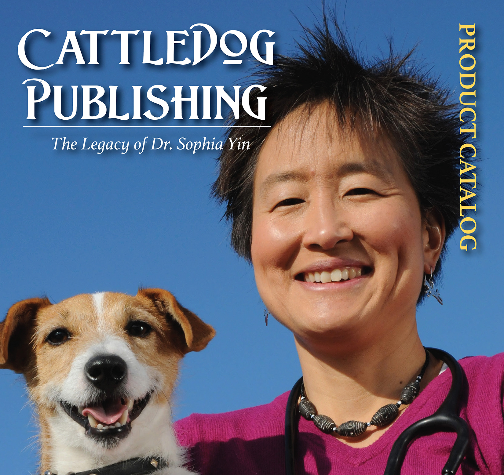

Once Upon A Time . . .
From the dawn of time, stories and storytelling have been an ever-present staple of human existence. In the beginning stories were used to tell the histories (or herstories, if you will) of a people, to communicate the rules and guidelines of a society, and even to explain the world around them by creating a pantheon of gods and goddesses (e.g., Egyptian, Greek, Roman, Norse, Native American, Indian, etc.).
This pattern continued for thousands of years. Then, and it is hard to pinpoint exactly when it happened, a shift in style and subject matter occurred. Seemingly all of a sudden, the stories changed from history, science, and religion, into fictional stories which became a commentary of the societies and events of the writer's current world. This shift in storytelling gave birth to two disctinctive styles of writing within the fiction arena: literary fiction and genre fiction.
- Literary fiction is defined as: "a story that tries to be bigger than the story itself. To do this, literary fiction must comment on something that is considered significant, such as social or political issues, or the human condition." -(https://study.com/academy/lesson/literary-fiction-definition-examples.html)
- Genre fiction, on the other hand, is defined as: "refer[ing] to nonliterary works and include the categories of mystery, science fiction, fantasy, romance, western, and horror. Pure genre fiction is usually "one note" and works solely on the level it is intended. It does not necessarily have complex characters and is usually not character-driven, but plot-driven. Genre fiction tends to be written and read primarily for entertainment." -https://www.thebalancecareers.com/genre-fiction-definition-for-creative-writers-1277085
A Fiction of My Own
My style of writing most closely fits within the genre fiction side of the arena. Within genre fiction there are numerous categories (e.g., horror, fantasy, romance, western, mystery, etc.) and I have discovered, over my years of crafting works of fiction, that I enjoy writing within several of these categorical genres. Currently, I have short stories and novels-in-progress that fit within the categories of romance, historical fantasy, science-fiction, horror, and thriller, among others. Captured within the links below, you will discover a sampling of some of the stories that I have written, including both completed (or mostly completed) short stories and extracts from novels length projects that are currently still in progress.
.png)
TVEN Quarterly Magazine
As the Founder and Executive Director of the Transgender Visibility & Education Network (TVEN), I decided to craft a quarterly magazine (using Indesign & Photoshop) which would serve the needs of the transgender community and our supporters. I served as both the graphic designer, primary writer, and Senior Editor of the magazine during its five-issue run.
Read the May 2018 issue
Read the August 2018 issue
Read the November 2018 issue
Read the February 2019 issue
Read the May 2019 issue

CattleDog Publishing Product Brochure
This brochure was designed using InDesign and Photoshop. It served as one venue for showcasing the various products and services that the company offers.
Read the Story
Pronoun Usage Flyer
This flyer was designed using InDesign and PhotoShop
Read the Story

Informational Flyer
This flyer was designed using InDesign.
Read the Story

TVEN Marketing Brochure
This brochure was designed using InDesign and Photoshop.
Read the Story
Why Do Pronouns Matter Brochure
This brochure was designed using InDesign and Photoshop.
Read the Story